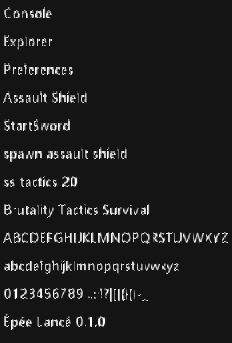
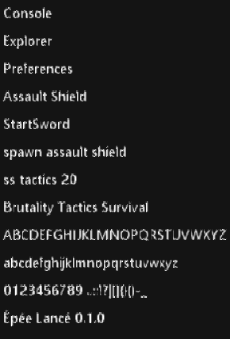
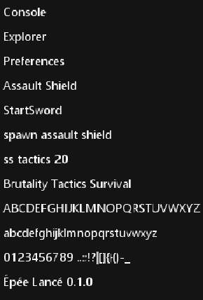
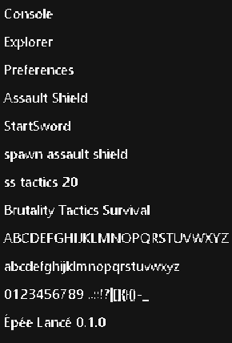
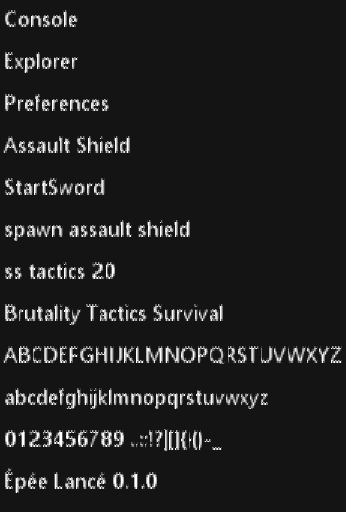
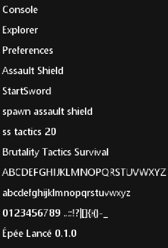

a @ 1.00x — R11 baseline: dark gutters, bilinear
b @ 1.00x — white gutters, bilinear

c @ 1.00x — white gutters, nearest

d @ 1.00x — semibold, white gutters, nearest
e @ 1.00x — threshold reference, nearest
a @ 1.25x — R11 baseline: dark gutters, bilinear

b @ 1.25x — white gutters, bilinear

c @ 1.25x — white gutters, nearest

d @ 1.25x — semibold, white gutters, nearest
e @ 1.25x — threshold reference, nearest

a @ 1.50x — R11 baseline: dark gutters, bilinear
b @ 1.50x — white gutters, bilinear

c @ 1.50x — white gutters, nearest
